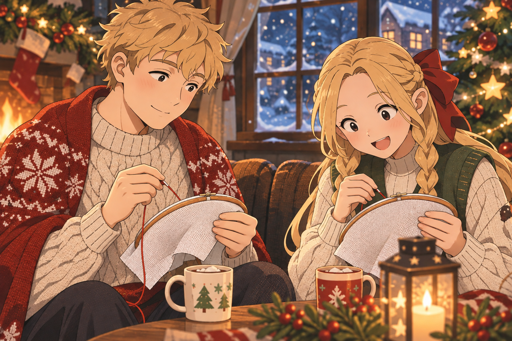
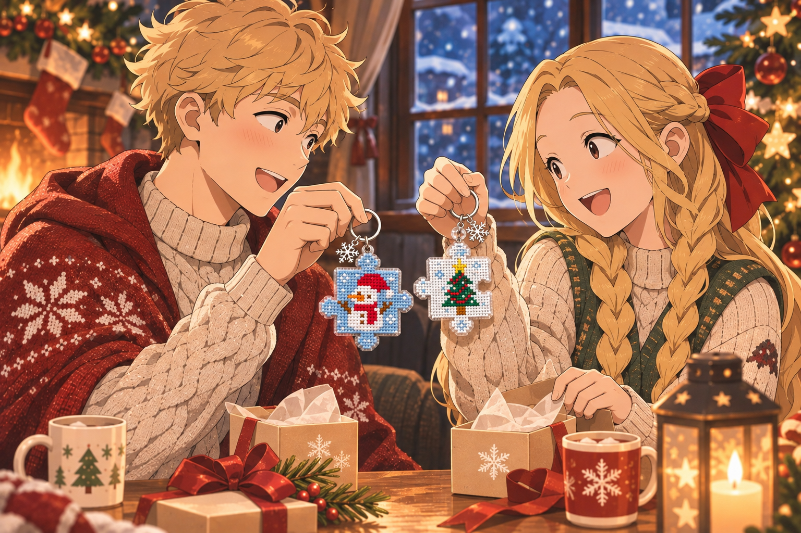
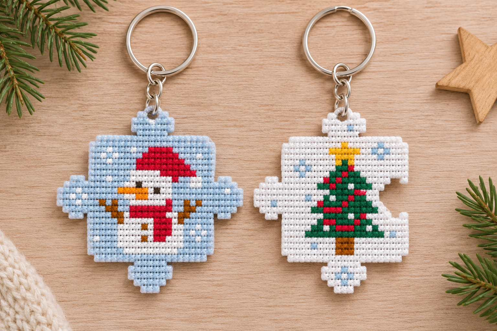
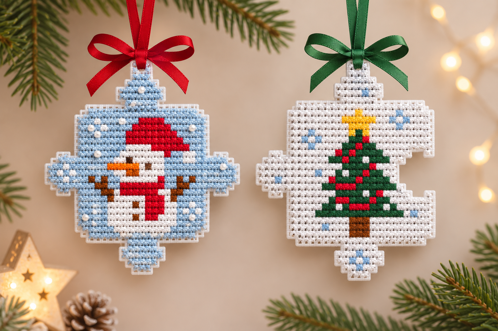
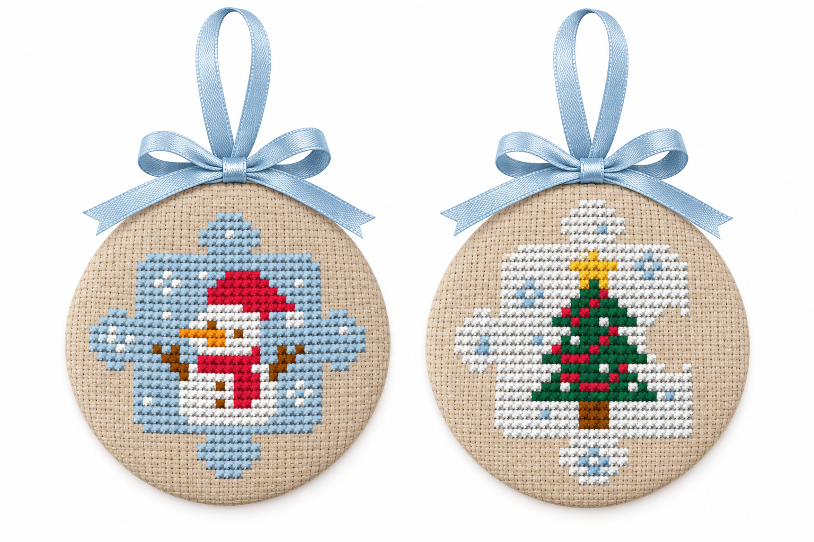
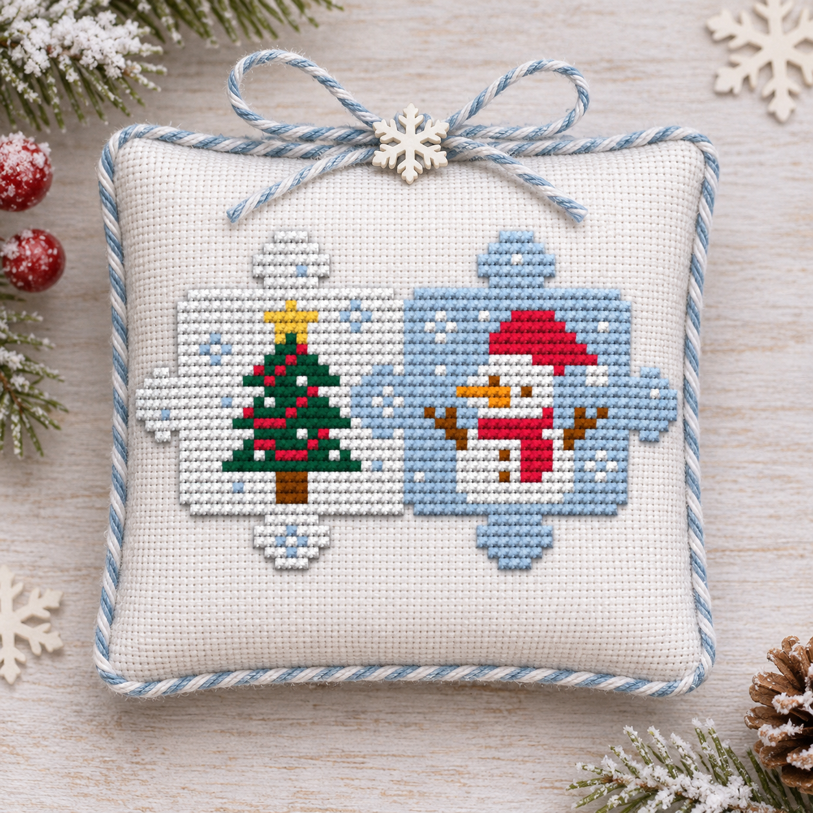
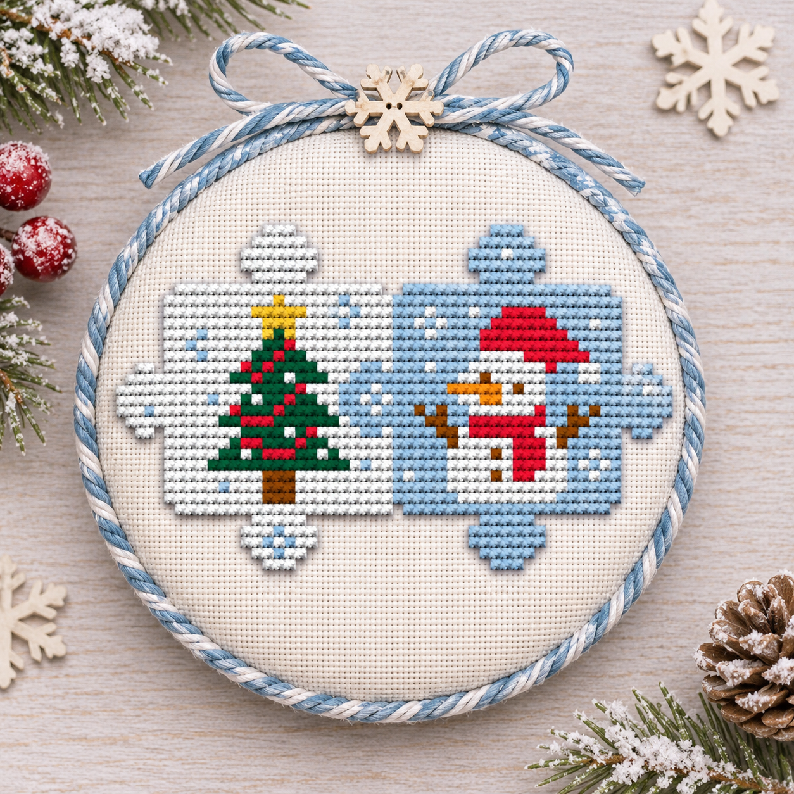

CHRISTMAS CROSS STITCH IDEAS
Christmas Cross Stitch Puzzle: 4 Creative Ideas for Friends
Two little puzzle pieces, a cheerful snowman and a Christmas tree. Discover four ways to turn one festive cross stitch design into thoughtful gifts, handmade decorations and a cosy Craftmas tradition.
Published 10 November 2026 · By Wartlon

There’s something rather lovely about Christmas crafting with a friend. A cup of tea, a favourite festive film and a little stitching can turn an ordinary winter afternoon into a memory worth keeping.
My mini Christmas puzzle cross stitch design features two coordinating puzzle-shaped motifs: a decorated Christmas tree and a smiling snowman. You can stitch the whole picture on one piece of fabric, or make each motif separately for a matching pair of gifts.
The best bit? The pieces don’t need to physically interlock. Their puzzle shapes are a playful symbol of friendship, and each motif works beautifully on its own.
A Little Craftmas Project for Two
Craftmas is simply Christmas with a creative twist: making something by hand, whether on your own or with someone you love. For this project, one friend can stitch the snowman while the other stitches the tree. Swap your finished pieces as gifts, or keep a matching reminder of your time together.

1. Make Matching Christmas Friendship Keychains
If you’re looking for a small handmade Christmas gift for your best friend, matching cross stitch keychains are a charming option. Stitch each motif on a separate piece of plastic canvas, carefully trim around the outline and add suitable keyring findings.
One person can carry the snowman, while the other keeps the Christmas tree. They’re coordinating rather than identical, which makes them feel especially personal.

Finishing tip: Leave a safe margin of plastic canvas around your stitches and reinforce the attachment point. Check the size and strength of your chosen hardware before using the finished piece as a keychain.
2. Stitch Plastic Canvas Christmas Tree Ornaments
For a more traditional festive finish, turn the two puzzle pieces into separate Christmas tree decorations. Plastic canvas helps each motif hold its shape, while a ribbon loop adds a simple way to hang it.
Try a red ribbon for the snowman and green for the tree, or use matching colours to make the pair feel like a set. Hang them together, or give one to a friend so you each have a little piece of the same Christmas story.

If you prefer a softer finish, you could also stitch the motifs on fabric and make two round hanging ornaments.

3. Turn the Design into a Christmas Pinkeep
Love a cosy, traditional embroidery finish? A pinkeep is a lovely way to display a small cross stitch design. Stitch the complete puzzle on fabric, then mount it over a padded base with a fabric backing. Finish the edges with decorative cord or ribbon.
You can choose a square shape for a classic little cushion-style pinkeep, or a round finish for a softer look. Both work beautifully with the snowman and Christmas tree together.


These are inspiration for finishing your embroidery, rather than instructions included with the PDF pattern. Choose a backing and finishing method that suits your materials.
4. Keep Both Puzzle Pieces Together in a Hoop
Sometimes the simplest finish is the nicest. Stitch the full snowman-and-tree composition on one piece of Aida and display it in an embroidery hoop or a small frame. The contrasting snowy blue and white puzzle shapes give the design plenty of character without any extra embellishment.
This is also a good choice if you’d rather focus on stitching than cutting plastic canvas or assembling ornaments.
What You Might Need
- The Mini Christmas Puzzle Cross Stitch PDF Pattern
- Embroidery fabric or plastic canvas, depending on your chosen finish
- Embroidery floss, needle and scissors
- Optional keyrings, ribbon, backing fabric, padding, decorative cord or a hoop
Check the pattern’s stitch count and recommended materials before cutting your fabric. The PDF is a digital cross stitch pattern, not a physical kit or a set of ready-made ornaments.
A Few Questions Before You Start
Do the two puzzle pieces actually fit together?
They’re designed as complementary puzzle-shaped motifs. Separate pieces stitched on plastic canvas may not physically connect, so I recommend treating them as matching decorations rather than a working jigsaw puzzle.
Can I make the keychains or ornaments with plastic canvas?
Yes, plastic canvas is a possible finishing choice for separate motifs. Check the canvas count against your pattern, and take care when trimming and attaching hardware.
Do I have to stitch the pieces separately?
Not at all. You can stitch the complete design on one piece of fabric and finish it in a hoop, frame or pinkeep.
Two Friends, Two Pieces, One Christmas Memory
Whether you make matching friendship keychains, little tree ornaments or one cosy embroidered decoration, I hope this Christmas puzzle inspires you to slow down and enjoy a little festive stitching.
Perhaps it will even become your new Craftmas tradition: one design, two friends and a handmade memory to bring out each December.
STITCH THE DESIGN
Make Your Own Mini Christmas Puzzle
Ready to try one of these finishing ideas? Find the digital cross stitch pattern in my Etsy shop.
View the Christmas Puzzle Pattern on Etsy →Happy festive stitching,
Wartlon